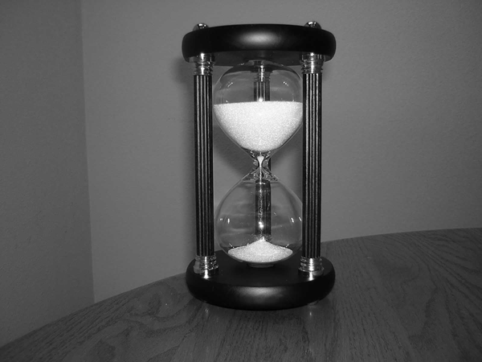

|  | Invertible function: A function f from a set X to a set Y is said to be
invertible if there exists a function g from Y to X such that
f(g(y)) = y and g(f(x)) = x for every y in Y and x in X.
In this image, we see a standard hourglass; applying our function f corresponds to flipping the hourglass. When f is applied, the grains of sand (elements) in the top of the hourglass (set X) are sent to the bottom of the hourglass (set Y). This action can then be reversed: we can send the grains of sand (now elements of Y) back to set X by, literally, inverting the hourglass—this action corresponds to applying function g, the inverse of f. While flipping an hourglass is not exactly a function (it does not, in fact, send grains of sand bijectively to other grains of sand), it captures the notion of invertibility: it is an action that can be reversed, ad infinitum, to send elements back from whence they came.
|